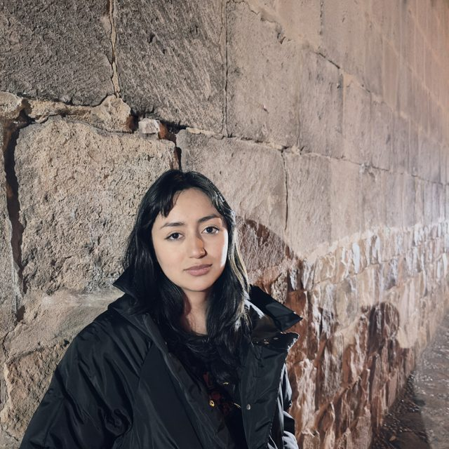

Politóloga de la PUCP
Cajamarquina
Trabajo con archivos y datos: los ordeno, los analizo con herramientas estadísticas y de inteligencia artificial, y los convierto en indicadores sobre el país.

Trabajo con datos que no estaban listos para usarse. Este es el recorrido de casi todo lo que hago, con un ejemplo real.
Cada punto, 5 disposiciones. Fuente: Base de Estados de Emergencia en el Perú, EGPP-PUCP, versión julio 2026.
Votar, postular, protestar, organizarse. Me interesa por dónde entra la gente a la política y a la vida pública, y quiénes quedan fuera.
Qué hace el Estado peruano frente a sus límites y desafíos: cuándo suspende derechos, a qué territorios llega y cuánto gasta.
Diciembre de 2024 – hoy. Lima.
Área de Investigación e Incidencia y Observatorio para la Democracia y Gobernabilidad
Producimos datos abiertos y tableros sobre la política peruana, y los contamos en infografías para redes.
Fuente: tablero de Estados de Emergencia del Observatorio. Una disposición es una declaratoria, prórroga, modificatoria o término.
Encuestas a población migrante venezolana para la Encuesta Anual Conjunta de Necesidades de la plataforma R4V.
Búsqueda, revisión y sistematización de fuentes para el libro Las amenazas a la seguridad del Perú en el siglo XXI.
Voluntariado
Proyectos de incidencia en salud sexual y reproductiva con jóvenes.
Intervenciones pedagógicas sobre derechos humanos y democracia.
Décimo superior durante toda la carrera.
Tercer puesto de la promociónGobernanza global, tratados internacionales con enfoque de género y teoría política.
Vida estudiantil
Proceso editorial de la revista indexada POLITAI.
Material audiovisual, boletines y el podcast de la asociación, y la primera revista indexada.
Analiza 1 536 decretos supremos: el uso de las prórrogas, la concentración en el VRAEM y el corredor minero, y la expansión ante conflictos, desastres y criminalidad.
Coautora y constructora de la baseNarcotráfico, tala y minería ilegal, trata de personas, crimen organizado y terrorismo.
Asistente de investigaciónBases de datos, tableros y herramientas que construí o en los que participé. Cada ficha dice qué pregunta responde y qué hice yo.
Un resumen en video del tablero sobre protesta social y estados de emergencia en el Perú, 2000–2025. La narración usa mi voz clonada con IA (Qwen3-TTS) a partir de una grabación mía.
Con qué trabajo. Los puntos marcan cuánto lo uso en el día a día.
pandas y geopandas; scraping con Selenium, Playwright, BeautifulSoup y trafilatura; OCR con PaddleOCR; transcripción con faster-whisper; tableros en Streamlit.
Limpieza, estadística descriptiva e inferencial, visualización y reportes con Quarto.
Clasificación de texto con LLM (Claude, Batch API), extracción estructurada desde PDF, servidores MCP y skills de Claude Code, siempre con revisión humana.
QGIS y geopandas para coropletas por distrito con ubigeo y shapefiles del INEI; imágenes Sentinel-2.
Excel, Word y PowerPoint; Photoshop, Illustrator y Canva para infografías.
Español nativo, inglés avanzado (C1) y alemán básico profesional (B1).
Lo que escucho, lo que veo y dónde encontrarme.
Al empezar verás todos los escaños destapados por unos segundos. Después se voltean: encuentra los 12 pares para llenar el hemiciclo. Ningún objeto representa a un partido.